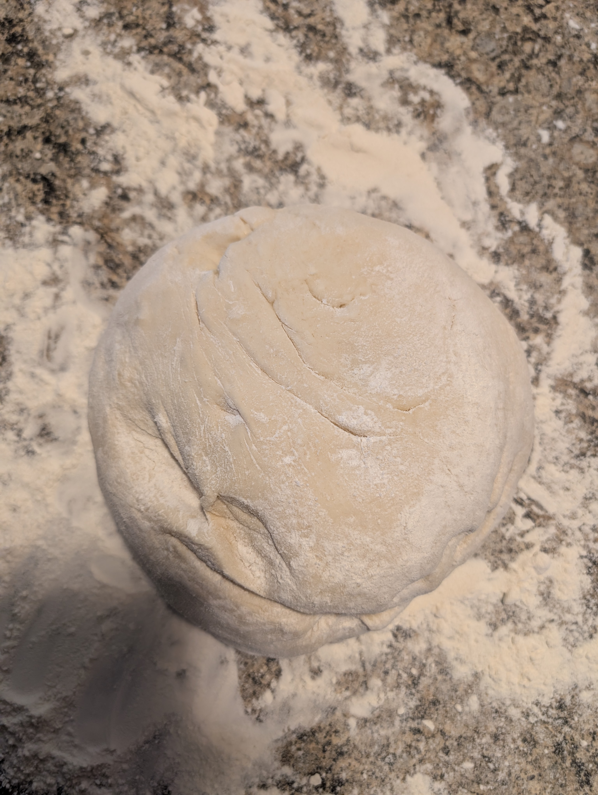

← All recipes

Pizza Dough
Chris's homemade pizza dough.
Ingredients
- 2 cups warm water/li>
- 1 tbsp active dry yeast
- 1 1/2 tsp honey
- 5 cups flour and extra to make ball consistency
- 3 tsp kosher salt
- olive oil
Steps
- Mix water, yeast and honey in stand mixer mixing bowl. Let sit for 5 minutes.
- Add flour and salt to bowl. Using dough hook, mix on speed 2 for 2 minutes.
- Add additional flour until dough ball cleans bowl.
- Mix for 4 more minutes at speed 3.
- Coat another bowl with olive oil.
- Place dough in bowl, and cover for at least one hour.
- After dough has risen, punch dough down, and turn onto a floured surface. Shape into pizzas (2 to 3 large pizzas, or several small ones). Then top with your favourite sauces and toppings.
- Bake at 450°F for 15 to 20 minutes until crust is golden brown. If cooking two pizzas at the same time, rotate racks halfway through.
Notes: Makes good garlic bread as well!